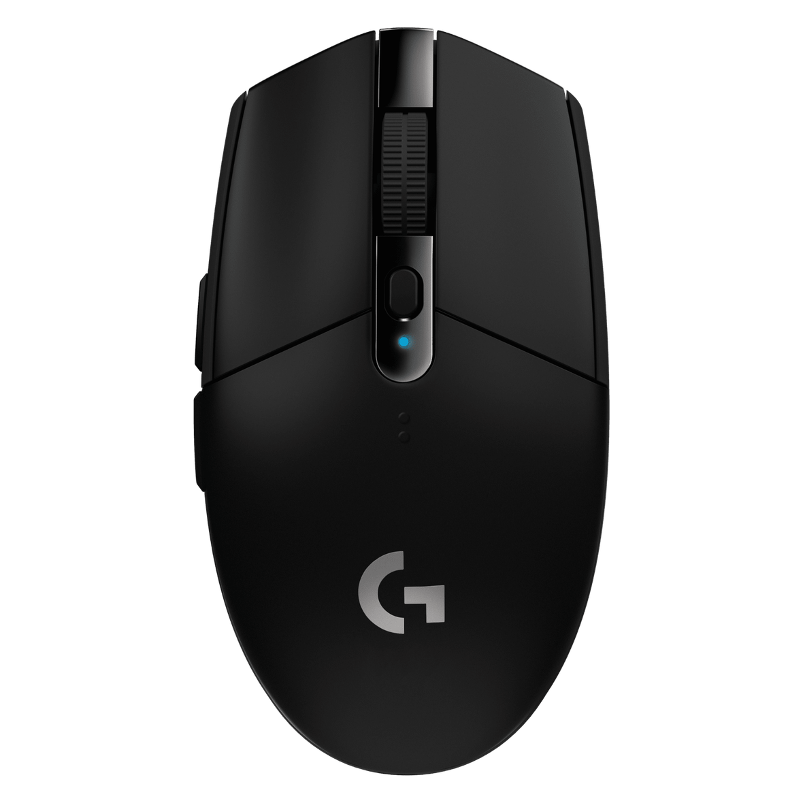

鼠标
G304
已连接
HID++
电量低
写入前请确认电量

性能摘要
G304
当前 DPI1000档位 3 / 5
轮询率1000 Hz低延迟模式
板载配置开写入鼠标
电量 20%
建议先充电再写入；低电量写入可能失败。
性能
DPI
1000DPI
20012000
轮询率越高越跟手，也更耗电
1000 Hz
DPI 档位点击档位切换
设备
G304型号G304
连接LIGHTSPEED
电量20%
配置名称
PROFILE_NAME_DEFAULT
板载配置开启后由鼠标固件执行
开
按键由板载配置决定；只读状态以设备返回为准。
按键映射
设备返回 6 个左键左键点击
右键右键点击
中键中键点击
后退后退
前进前进
DPIDPI 切换
数量与顺序由鼠标板载配置决定；不同型号的按键名不同。只读时整表禁用并说明原因